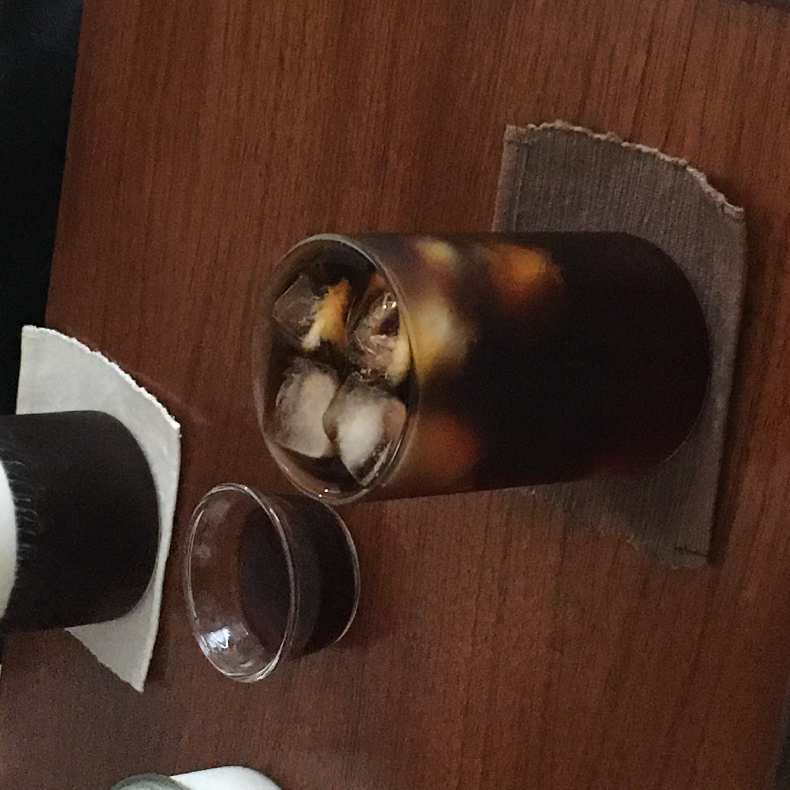

2020 10 25 stil life

전주 보건소 근처 골목에 위치한 작은 카페이다. 에스프레소 머신을 사용하지 않고 커피를 만들어주시고,
크림이 올라간 커피는 행복한 맛이다. 커피맛도 훌륭하지만 이 공간을 더더욱 매력적이게 만다는건 음악이 아닐까?
기본적으로 아주 조용한 이 카페는 혼자 생각에 잠겨있기에 알맞은 곳이다. 타지역 사람들이 전주에 놀러오면
꼭 추천해주는 곳이다.